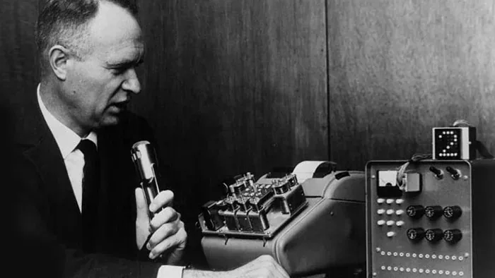
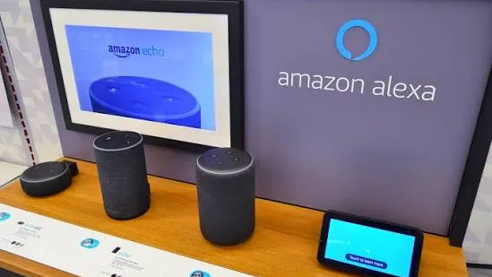

A short timeline
| Period | Milestone | What happened |
|---|---|---|
| 1952 | Audrey | Researchers at Bell Labs built Audrey, which recognised the digits 0 to 9 spoken by a single speaker[1]. |
| 1962 | IBM Shoebox | IBM’s system understood 16 English words. |
| 1971–1976 | DARPA | The US defence agency funded a five-year programme aiming for a 1,000-word vocabulary. The HARPY system from Carnegie Mellon met the goal in 1976. |
| 1974 | DRAGON and Hidden Markov Models | James and Janet Baker’s DRAGON system used a statistical method, the Hidden Markov Model (HMM), instead of hand-written rules. Probability decides which word was most likely said. |
| 1980s | Statistics take over | HMMs became the standard approach, and vocabularies grew from a few hundred words to thousands. In 1984 the Apricot became the first personal computer with built-in speech recognition. |
| 1992 | Telephone call routing | AT&T deployed an automated service that routed phone calls without a human operator. |
| 2010s | Deep learning | Deep neural networks replaced HMMs. Systems became speaker-independent, so users no longer had to train them to their voice[2]. This is the technology behind voice assistants such as Siri and Alexa. |



What a voice interface is
A voice user interface (VUI) lets people control a device by speaking. It combines the audio hardware from the previous page (microphone arrays, noise suppression) with speech recognition software that turns the audio into text and then into an action.